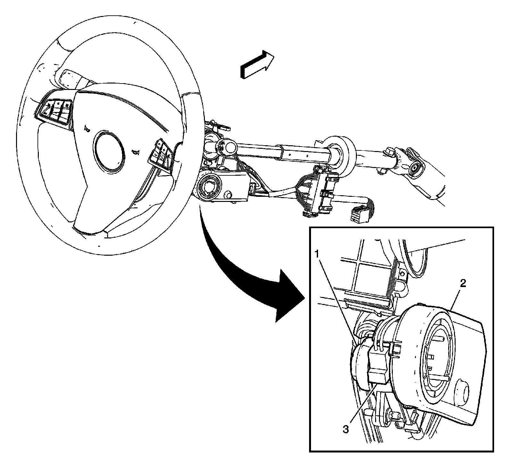
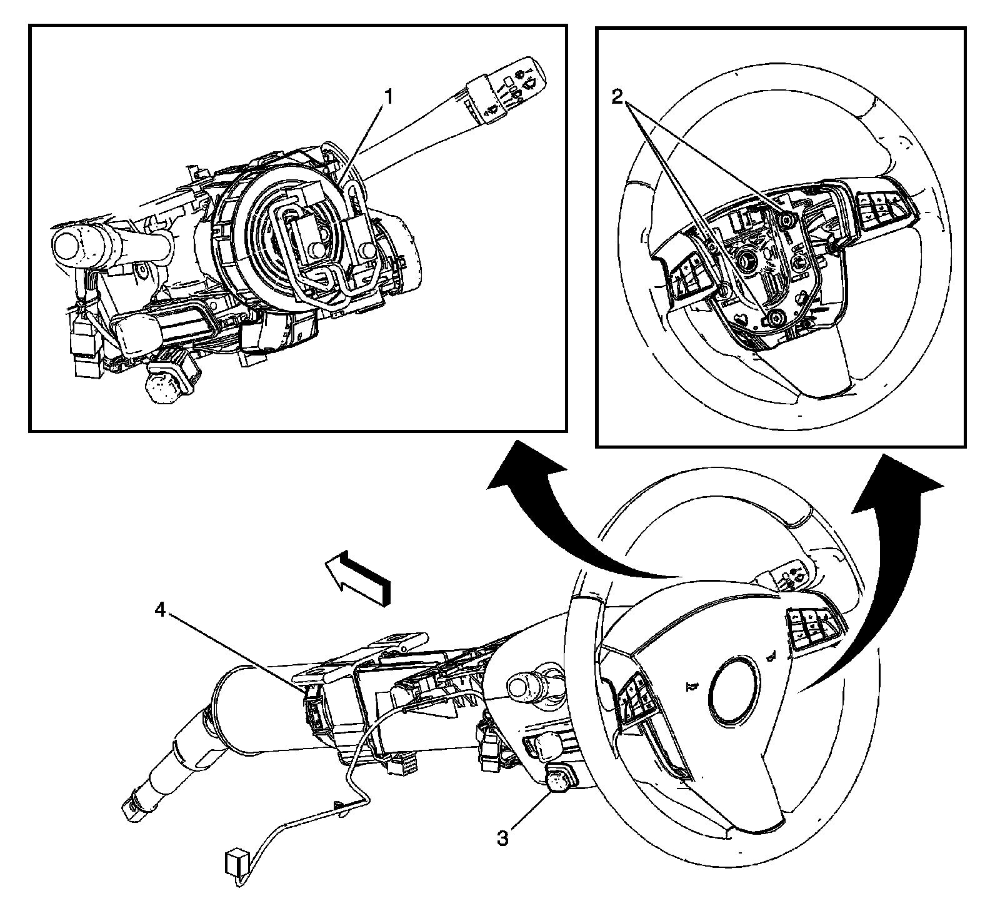

Steering Column: Locations
Instrument Panel/Center Console Component Views
Steering Column Components 1 of 2

1 - Ignition Lock Cylinder Case
2 - Theft Detterent Module (TDM)
3 - Ignition Lock Cylinder Solenoid
Steering Column Components 2 of 2

1 - Inflatable Restraint Steering Wheel Module Coil
2 - Horn Contact Switch
3 - Adjustable Pedal Switch (JF4)
4 - Steering Angle Sensor